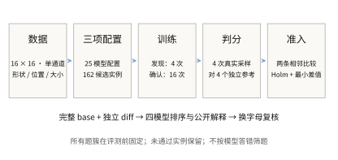
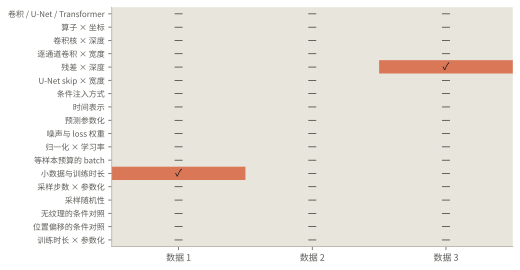
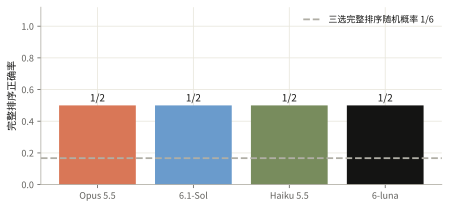

生成首批：预算题容易，残差题四模型全错
18个题簇的54个实例均已训练与确认；只有2个实例通过既定显著性和差值门槛。四个模型都答对训练预算题，也都错判深层残差与无残差对照。
- 数据 受控合成图像
- 题型 三选完整排序
- 训练重复 4 次发现 + 16 次确认
- 计算 360-1 / ophis
给定形状条件，学习随机亮度和纹理

18个出题簇×3个数据种子，共测试54组三选排序；去重后为12个数据集、162个训练配置、25个模型配置。图像为16×16的圆、方形和环；给定位置、尺度，随机生成亮度与纹理。覆盖算子、卷积块、残差、条件注入、扩散目标、训练与采样预算。题面共享完整基准代码，各选项改动独立相对基准。先用4次训练的验证集均值定方向，再用16个新训练种子做测试集配对符号检验、Holm多重比较校正；相邻平均评分差须至少0.003。
排序使用真实采样的 energy score（能量评分）：比较生成图像与独立参考图像的距离，并扣除生成样本之间的距离项。越低越好。四个生成样本和四个参考样本提供有限蒙特卡洛估计。条件形状成功率和多样性另列，不能互相替代。预测目标包括干净图像 x₀、噪声 ε，以及二者的线性组合 v；它们的去噪损失不能直接跨目标比较。图中的 U-Net 是带跳跃连接的单层级下采样与上采样网络。采样使用 DDIM，评分依据 严格适当评分规则。
固定展示数据种子851901、训练种子200、条件0—7的首张生成图；多样性图展示条件0、1的全部4次生成。主体四列在同一模型上比较两种扩散预测目标与3000/6000步。全部7个预指定模型文件均经独立重新采样核验，未按得分或外观挑图。下文统计使用16个训练种子，单个模型的图片不代表均值。每条件以4张生成图和4张独立参考图计算能量分数，越低越好；同时核查轮廓、背景与条件内变化。


未通过确认的题目也保留在覆盖图中
发现阶段只用验证集固定顺序。确认阶段使用独立的 16 个训练 seed，对两条相邻比较做单侧配对符号检验。Holm 校正覆盖本批全部 108 条冻结假设，校正 p ≤ 0.05，且平均差值至少 0.003。分类首批、分类补充批和生成批分别定义检验族；未声称跨批联合错误率仍为 5%。它检验训练 seed 上差异方向的稳定性，不是期望均值差的显著性检验。

全部相邻差值与拒绝原因
| 实例 | 平均差值 | 校正 p | 通过 |
|---|---|---|---|
| 卷积 / U-Net / Transformer · 851901 | -0.0022463 | 1 | 否 |
| 卷积 / U-Net / Transformer · 851901 | 0.012279 | 0.0016479 | 是 |
| 卷积 / U-Net / Transformer · 851902 | 0.0020695 | 1 | 否 |
| 卷积 / U-Net / Transformer · 851902 | 0.010496 | 0.15887 | 否 |
| 卷积 / U-Net / Transformer · 851903 | 0.00015123 | 1 | 否 |
| 卷积 / U-Net / Transformer · 851903 | 0.012494 | 0.0016479 | 是 |
| 算子 × 坐标 · 851901 | -0.000169 | 1 | 否 |
| 算子 × 坐标 · 851901 | 0.021407 | 0.0016479 | 是 |
| 算子 × 坐标 · 851902 | -0.00054025 | 1 | 否 |
| 算子 × 坐标 · 851902 | 0.02433 | 0.0016479 | 是 |
| 算子 × 坐标 · 851903 | 0.0015078 | 0.6913 | 否 |
| 算子 × 坐标 · 851903 | 0.02335 | 0.0016479 | 是 |
| 卷积核 × 深度 · 851901 | 0.00050227 | 1 | 否 |
| 卷积核 × 深度 · 851901 | 0.052511 | 0.0016479 | 是 |
| 卷积核 × 深度 · 851902 | 0.0017654 | 1 | 否 |
| 卷积核 × 深度 · 851902 | 0.055779 | 0.0016479 | 是 |
| 卷积核 × 深度 · 851903 | 0.0018513 | 1 | 否 |
| 卷积核 × 深度 · 851903 | 0.05186 | 0.0016479 | 是 |
| 逐通道卷积 × 宽度 · 851901 | 0.0039467 | 1 | 否 |
| 逐通道卷积 × 宽度 · 851901 | 0.0055725 | 1 | 否 |
| 逐通道卷积 × 宽度 · 851902 | -0.0024783 | 1 | 否 |
| 逐通道卷积 × 宽度 · 851902 | 0.012465 | 0.15887 | 否 |
| 逐通道卷积 × 宽度 · 851903 | 0.0012635 | 1 | 否 |
| 逐通道卷积 × 宽度 · 851903 | 0.0089539 | 0.15887 | 否 |
| 残差 × 深度 · 851901 | 0.0048418 | 0.15887 | 否 |
| 残差 × 深度 · 851901 | 0.018106 | 0.0016479 | 是 |
| 残差 × 深度 · 851902 | -0.0033303 | 1 | 否 |
| 残差 × 深度 · 851902 | 0.022619 | 0.0016479 | 是 |
| 残差 × 深度 · 851903 | 0.0045361 | 0.022827 | 是 |
| 残差 × 深度 · 851903 | 0.012488 | 0.022827 | 是 |
| U-Net skip × 宽度 · 851901 | 0.0046892 | 0.022827 | 是 |
| U-Net skip × 宽度 · 851901 | -7.5235e-05 | 1 | 否 |
| U-Net skip × 宽度 · 851902 | 0.0038241 | 0.15887 | 否 |
| U-Net skip × 宽度 · 851902 | 0.0011871 | 1 | 否 |
| U-Net skip × 宽度 · 851903 | 0.0052701 | 0.022827 | 是 |
| U-Net skip × 宽度 · 851903 | -0.0016016 | 1 | 否 |
| 条件注入方式 · 851901 | 0.0081897 | 1 | 否 |
| 条件注入方式 · 851901 | 0.0032334 | 1 | 否 |
| 条件注入方式 · 851902 | 0.0072485 | 0.6913 | 否 |
| 条件注入方式 · 851902 | 0.005427 | 1 | 否 |
| 条件注入方式 · 851903 | 0.0070652 | 0.6913 | 否 |
| 条件注入方式 · 851903 | 0.00079834 | 1 | 否 |
| 时间表示 · 851901 | 0.0019531 | 1 | 否 |
| 时间表示 · 851901 | 0.059223 | 0.0016479 | 是 |
| 时间表示 · 851902 | 0.0019369 | 1 | 否 |
| 时间表示 · 851902 | 0.061578 | 0.0016479 | 是 |
| 时间表示 · 851903 | 0.0043078 | 1 | 否 |
| 时间表示 · 851903 | 0.04546 | 0.022827 | 是 |
| 预测参数化 · 851901 | 0.013512 | 0.15887 | 否 |
| 预测参数化 · 851901 | 0.047664 | 0.15887 | 否 |
| 预测参数化 · 851902 | 0.020428 | 1 | 否 |
| 预测参数化 · 851902 | 0.043087 | 1 | 否 |
| 预测参数化 · 851903 | 0.021582 | 1 | 否 |
| 预测参数化 · 851903 | 0.028186 | 1 | 否 |
| 噪声与 loss 权重 · 851901 | -0.00012285 | 1 | 否 |
| 噪声与 loss 权重 · 851901 | 0.0020982 | 1 | 否 |
| 噪声与 loss 权重 · 851902 | 0.002855 | 1 | 否 |
| 噪声与 loss 权重 · 851902 | 0.0044495 | 0.6913 | 否 |
| 噪声与 loss 权重 · 851903 | 0.0051928 | 0.022827 | 是 |
| 噪声与 loss 权重 · 851903 | -0.0084772 | 1 | 否 |
| 归一化 × 学习率 · 851901 | 0.01169 | 0.022827 | 是 |
| 归一化 × 学习率 · 851901 | -0.0032628 | 1 | 否 |
| 归一化 × 学习率 · 851902 | 0.0078876 | 0.15887 | 否 |
| 归一化 × 学习率 · 851902 | -0.0036789 | 1 | 否 |
| 归一化 × 学习率 · 851903 | 0.0059451 | 0.6913 | 否 |
| 归一化 × 学习率 · 851903 | -0.0026477 | 1 | 否 |
| 等样本预算的 batch · 851901 | 0.0046155 | 1 | 否 |
| 等样本预算的 batch · 851901 | 0.0052793 | 0.6913 | 否 |
| 等样本预算的 batch · 851902 | -0.0065928 | 1 | 否 |
| 等样本预算的 batch · 851902 | 0.014495 | 0.15887 | 否 |
| 等样本预算的 batch · 851903 | -0.0038393 | 1 | 否 |
| 等样本预算的 batch · 851903 | 0.00802 | 0.022827 | 是 |
| 小数据与训练时长 · 851901 | 0.0073286 | 0.022827 | 是 |
| 小数据与训练时长 · 851901 | 0.03015 | 0.0016479 | 是 |
| 小数据与训练时长 · 851902 | 0.0045571 | 1 | 否 |
| 小数据与训练时长 · 851902 | 0.027054 | 0.0016479 | 是 |
| 小数据与训练时长 · 851903 | -0.0038379 | 1 | 否 |
| 小数据与训练时长 · 851903 | 0.026878 | 0.0016479 | 是 |
| 采样步数 × 参数化 · 851901 | -0.00049802 | 1 | 否 |
| 采样步数 × 参数化 · 851901 | 0.013014 | 0.6913 | 否 |
| 采样步数 × 参数化 · 851902 | -0.00035345 | 1 | 否 |
| 采样步数 × 参数化 · 851902 | 0.019879 | 1 | 否 |
| 采样步数 × 参数化 · 851903 | -2.4776e-05 | 1 | 否 |
| 采样步数 × 参数化 · 851903 | 0.020844 | 1 | 否 |
| 采样随机性 · 851901 | 0.00030386 | 1 | 否 |
| 采样随机性 · 851901 | 0.0018151 | 1 | 否 |
| 采样随机性 · 851902 | 0.0007917 | 1 | 否 |
| 采样随机性 · 851902 | 0.00064866 | 1 | 否 |
| 采样随机性 · 851903 | 0.00042667 | 1 | 否 |
| 采样随机性 · 851903 | 0.0022931 | 0.022827 | 否 |
| 无纹理的条件对照 · 851901 | -0.00037857 | 1 | 否 |
| 无纹理的条件对照 · 851901 | 0.006747 | 0.15887 | 否 |
| 无纹理的条件对照 · 851902 | -0.0012909 | 1 | 否 |
| 无纹理的条件对照 · 851902 | 0.0094802 | 0.022827 | 是 |
| 无纹理的条件对照 · 851903 | 0.00078981 | 1 | 否 |
| 无纹理的条件对照 · 851903 | 0.0086548 | 0.0016479 | 是 |
| 位置偏移的条件对照 · 851901 | 7.7646e-05 | 1 | 否 |
| 位置偏移的条件对照 · 851901 | 0.0095503 | 0.0016479 | 是 |
| 位置偏移的条件对照 · 851902 | 0.00031011 | 1 | 否 |
| 位置偏移的条件对照 · 851902 | 0.011729 | 0.15887 | 否 |
| 位置偏移的条件对照 · 851903 | 0.0013723 | 1 | 否 |
| 位置偏移的条件对照 · 851903 | 0.012937 | 0.0016479 | 是 |
| 训练时长 × 参数化 · 851901 | 0.013233 | 0.0016479 | 是 |
| 训练时长 × 参数化 · 851901 | 0.00010314 | 1 | 否 |
| 训练时长 × 参数化 · 851902 | 0.011329 | 0.022827 | 是 |
| 训练时长 × 参数化 · 851902 | 0.0017559 | 1 | 否 |
| 训练时长 × 参数化 · 851903 | 0.012553 | 0.0016479 | 是 |
| 训练时长 × 参数化 · 851903 | 0.0021654 | 1 | 否 |
完整排序和换字母后的稳定性分开计算
所有通过确认的题都进入四模型评测。重复数据实例和字母置换不是独立新题，下面不报告独立二项置信区间。API 缺失单列；单轮内已返回的错误或格式失败不会重抽。

本批一直输出最常见字母顺序可得 50.0%。这是准入后标签分布的事后描述，不能与事先固定的随机基线混同。
| 模型 | 主问题完成 | 已有回答模板宏平均 | 可解析回答的两两一致度 | 换字母：一致 / 有效配对 |
|---|---|---|---|---|
| Opus 5.5 | 2/2 | 50.0%（2/2 簇） | 83.3%（2 题） | 2/2 |
| 6.1-Sol | 2/2 | 50.0%（2/2 簇） | 66.7%（2 题） | 1/1 |
| Haiku 5.5 | 2/2 | 50.0%（2/2 簇） | 83.3%（2 题） | 1/2 |
| 6-luna | 2/2 | 50.0%（2/2 簇） | 66.7%（2 题） | 1/1 |
原批次只有2道主问题：四个模型均完成2题，各答对1题。训练预算题符合“更多步数”的表面规则；残差题实际是深层无残差→深层残差→浅层残差，四模型都把深层残差排在深层无残差之前。三选随机完整排序基线是1/6，但2题不足以建立模型能力排名。6条完成的字母置换回答中，Haiku改变了残差题两个配置的先后；Sol与Luna各缺同一道残差置换题，无输出失败保留为缺失。
预先固定的表面规则
{
"more_parameters": {
"admitted": 2,
"ordered": 0,
"tie": 2,
"not_applicable": 0,
"correct": 0,
"comparable_pairs": 2,
"correct_pairs": 2,
"accuracy_when_ordered": null,
"accuracy_on_comparable_pairs": 1.0
},
"more_training_steps": {
"admitted": 2,
"ordered": 1,
"tie": 1,
"not_applicable": 0,
"correct": 1,
"comparable_pairs": 3,
"correct_pairs": 3,
"accuracy_when_ordered": 1.0,
"accuracy_on_comparable_pairs": 1.0
},
"more_sampling_steps": {
"admitted": 2,
"ordered": 0,
"tie": 2,
"not_applicable": 0,
"correct": 0,
"comparable_pairs": 0,
"correct_pairs": 0,
"accuracy_when_ordered": null,
"accuracy_on_comparable_pairs": null
}
}正确排序和可靠解释需要分别核验
14条公开解释均逐条核验。四模型都认出深度和残差的差异，但把残差通常有利于优化的先验套用于当前配置。同深度、同初始权重与输入随机流的无残差模型在15/16个种子上评分更低，且末段训练损失更低；这仍不能证明梯度是唯一原因。部分解释还漏算输入卷积，或把卷积路径感受野误当网络的信息边界：分组归一化跨空间统计，每个像素也已获得坐标与条件。预算题虽然全对，更多训练实际带来轮廓更准、背景泄漏更少，同时条件内方差下降；正确排序不能验证全部多样性或记忆机制叙述。
| 模型 | 代码事实支持 | 关键因素支持 | 因果表述不成立 |
|---|---|---|---|
| Opus 5.5 | 0/2 | 0/2 | 0/2 |
| 6.1-Sol | 2/2 | 1/2 | 0/2 |
| Haiku 5.5 | 1/2 | 1/2 | 0/2 |
| 6-luna | 2/2 | 1/2 | 0/2 |
解释评分由本次研究 agent 按冻结标准逐条核查，是可复核的定性判断，不是多位专家独立评审的一致意见。这里只统计主问题的公开回答；部分支持、无法判断另存审核记录。关键因素得到局部对照支持，不代表证明了唯一内部机制。下方可逐题检查原话、证据和判断。
三项完整配置和测试分布
实际发送的完整题面
完整局部对照：改变什么，测试指标如何变化
这些对照用于描述和核验解释，不是新增的显著性筛选。多字段变化不能归因为其中一个字段；单字段干预也不证明唯一内部机制。测试指标越低越好。
公开解释审核
出题时预先定义的解释目标
共享完整代码保留可还原性
每个 choice 的 diff 都独立相对同一 base，训练、优化器和所有配置改动都显式呈现。自动重建最终完整代码，差异过大时显示完整文件。
本批主问题相对逐选项完整代码，UTF-8 总字节减少 51.3%。逐题范围 50.7%–51.9%。这是字节压缩率，不是 token 压缩率。
结论适用范围
- 这是程序生成的条件图像分布，不能推断自然图像或文本生图能力。
- 显著性描述固定数据和采样噪声下、不同训练种子的方向稳定性。每条件仅4张生成图和4张参考图，有限抽样误差仍存在。
- 轮廓正确可能伴随亮度、纹理均值化；过量变化也可能来自噪声。真实生成过程的独立样本、用16次独立抽样估计的条件均值均作为诊断基线，均未拟合测试参考图。
- 原图、噪声与混合目标的训练损失单位不同，排序只用真实生成图的能量分数。单个模型的展示图不能替代16次训练的统计。
- 数据851901上，相对坐标模型以混合目标训练6000步，16次训练的条件满足率为92.68%、方差比为1.76，仍有过量变化；平均能量分数0.05558，未优于独立条件均值估计0.05382，也未达到真实过程独立抽样的0.03632。
- 原批次仅2/54个实例准入。定义和测试过的题簇范围不等于已形成完整题库；补充批次采用新数据和训练种子、独立检验族，单独报告。
- 解释评分来自逐条证据审核，不由排序正误自动推断；单次字母置换不能估计总体位置偏差。